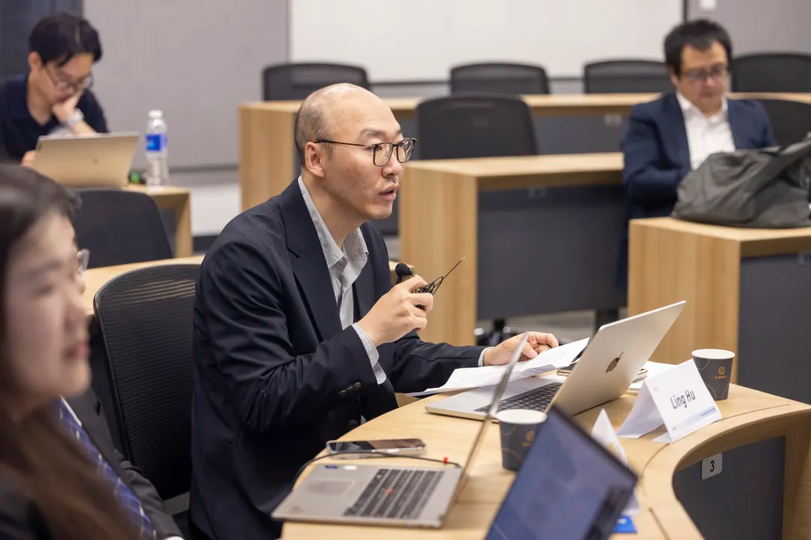
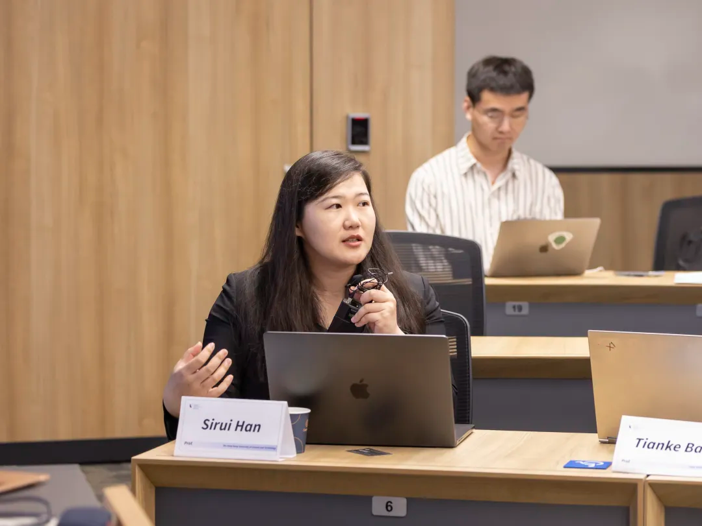
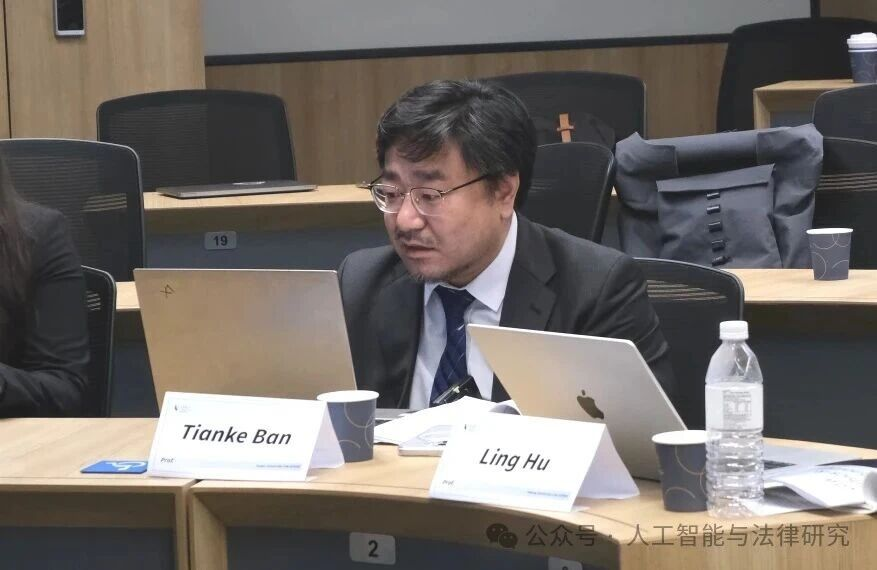
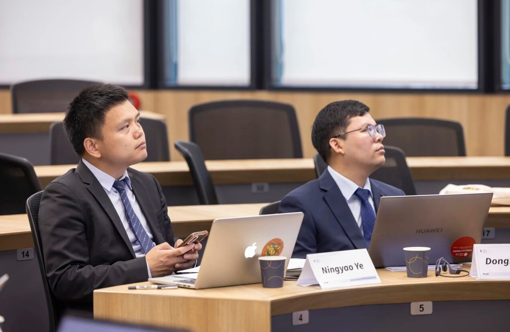
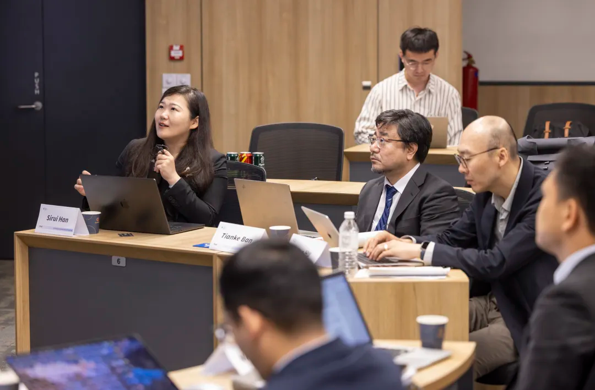

Organised by Professor Sirui Han’s team at HKUST, the Trustworthy Legal Reasoning Workshop brought together legal and AI researchers at Singapore Management University. Twelve presentations across three sessions examined evaluation, professional practice, rights protection and accountability in legal AI.

The Trustworthy Legal Reasoning: From Generative AI to Verified Legal Intelligence workshop was held at Singapore Management University on 12 June 2026 as an official workshop of ICAIL 2026.
Organised by Professor Sirui Han’s team at HKUST, the workshop combined in-person and online participation. Twelve papers were presented across three thematic sessions, bringing together researchers and students to examine how legal AI can produce reasoning that is reliable, open to review and responsive to the institutional requirements of legal practice.
Professors Ling Hu of Peking University, Tianke Ban of Fudan University, and Donghui Liu and Ningyao Ye of China University of Political Science and Law joined as invited guests and discussants.

Opening discussion
In his opening remarks, Professor Ling Hu reflected on the growing intersection between law and technology. Large language models have demonstrated substantial capabilities in processing and generating legal text, yet their computational approaches can remain in tension with the institutional demands of legal practice.
He encouraged participants to examine whether AI can participate meaningfully in legal reasoning, contestation and accountability. The workshop was conceived as an interdisciplinary conversation in which researchers could challenge assumptions, compare perspectives and identify questions requiring further investigation.

Session One From benchmarking to model design
Chaired by Professor Sirui Han, with Professors Ling Hu and Ningyao Ye as discussants, the first session examined how legal reasoning capabilities should be defined, measured and improved.
Six presentations addressed complementary aspects of this challenge. An authority-aware benchmark for Chinese tax law considered whether models rely on legal sources at the appropriate level of authority. PubLawgic examined capabilities required in public legal services, including fact understanding, clarification and substantive legal judgment. CaseCite investigated whether models can identify the passages in judgments that become influential through subsequent judicial citation.
Other contributions explored reinforcement learning and iterative correction in the Unilaw-R1 legal reasoning model; the risks of prematurely producing apparently complete legal answers; and a multi-agent framework for generating synthetic legal dialogue while protecting personal information.
The discussion highlighted the need to connect benchmark design with realistic legal tasks. Professor Ling Hu called for comparisons with the performance of lawyers and members of the public, alongside comparisons among models. Professor Ningyao Ye raised questions about cross-jurisdictional applicability, generalisation, citation networks and the assessment of synthetic legal data.
Participants also discussed the costs of expert review and the challenges of expanding evaluation across legal fields and jurisdictions.

Session Two Trust disclosure and litigation practice
The second session, chaired by Professor Ling Hu with Professors Donghui Liu and Tianke Ban as discussants, examined how AI systems can remain contestable and accountable in settings affecting individual rights and welfare.
A presentation on litigation practice proposed a lawyer-guided neuro-symbolic workflow for converting clients’ accounts into structured legal facts. The approach placed lawyers in charge of defining legal issues, evidential requirements and procedural considerations, followed by verification of generated results.
A second paper examined the obligations that arise after an individual challenges an automated decision. Its proposed framework focused on identifying who must respond, within what period and with what explanation or corrective action.
The third contribution considered emotional manipulation in AI companionship, proposing a framework that relates users’ decision-making resilience to the intensity of AI emotional intervention.
Discussants examined the practical demands of these proposals. Questions included how lawyer-guided workflows should be evaluated, whether efficiency pressures could encourage overreliance, how response obligations could produce substantive review and how emotional manipulation could be defined in a way suitable for regulation.
Across the session, participants emphasised that opportunities to raise objections need to be supported by meaningful explanation, review and correction.

Session Three Rights protection governance and market accountability
The final session addressed how existing legal institutions respond to challenges created by generative AI.
A paper on deepfakes examined both fabricated evidence and the possibility that genuine evidence may be dismissed as AI-generated. The discussion considered authentication standards, the allocation of evidential burdens and the role of provenance and procedural safeguards.
A second paper explored the use of anti-unfair competition law to address AI model appropriation. It proposed examining model similarity, market substitution and competitive harm, while preserving space for legitimate learning and innovation.
The final presentation proposed an incentive-based public notice mechanism for AI-generated creative work. It considered how prompts, revision histories and generation logs might preserve evidence of human creative contributions, alongside mechanisms for communicating claims without requiring extensive disclosure.
Discussion examined the boundaries between legitimate competition and unlawful appropriation, the practical costs of documenting creative processes and the compatibility of proposed mechanisms with existing copyright principles. Participants also considered when new rules may be needed and when established legal doctrines can be adapted through interpretation.

Closing reflections
In her closing remarks, Professor Sirui Han connected the workshop’s themes with the HKUST team’s experience developing local language models for Hong Kong’s public-sector context. Such applications require attention to local laws, policies and institutional needs throughout system development.
She described trustworthy legal reasoning as a governance-native approach spanning data, benchmarks, model design, evaluation, professional duties and oversight. As AI becomes part of professional workflows, these considerations shape whether systems can operate correctly and responsibly in practice.
Professor Han thanked the session chairs, discussants, presenters and participants, acknowledged Yidan Huang and Guoying Lu for their hosting support, and expressed appreciation to Singapore Management University for hosting the workshop.
The workshop established a basis for continued interdisciplinary exchange on legal AI, connecting technical research with the procedures through which evidence is assessed, decisions are challenged and responsibility is exercised.
All events and news